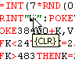

|
|
Vic 20 .prg file reader by Lee Davison |
|
UseWant an easy way to convert a Vic 20 .prg file into something a little more platform independant? I did, so I cobbled this together and added bits until I got bored.
The programThe program takes a standard Vic 20 .prg file and reads it. Optionally it will produce a text and/or html version of that file. An example html output is here.
On running prgread.exe you will be prompted for a filename, as this is a QuickBASIC program you need to enter the DOS filename, without the .prg extension. If the filename contains spaces you'll have to enclose it in quotes, e.g. "demo 1". If you enter a null filename the program will just exit at this point.
Any time while the files are being written output can be aborted by pressing the [ESC] key.
After the filename you will be asked if you want a text output file. If you answer yes, or just press return, an ASCII file with the same name as the input file but with a .txt extension will be output. In this file special Commodore characters will be rendered as ASCII surrounded by curly braces, e.g. [CTRL] 1, which is the colour control for black, will be replaced by {BLK}. An example of this type of output is here.
After the text output prompt you will be asked if you want an html output file. If you answer yes, or just press return, an html file with the same name as the input file but with an .htm extension will be output. As well as this you will be asked if you want html graphics, if you answer yes to this then the special Commodore characters will be rendered as 8 by 8 graphics instead of as ASCII names, e.g.[CTRL] 1, which is the colour control for black, will be replaced by "". An example of this type of output is here where the {CLR} on line 11 has been replaced by it's graphic equivalent. The default response is not to use graphics.
The HTML produced by prgread can easily be edited and then included in other HTML pages, or just used as is.
If you do opt to use the html grapgics you will be prompted for an image path. If the images will be in the same directory as the html file then just hit [ENTER] to not add a path. If the images will be in another directory you can enter the relative path and this will be added to each image entry.
 Another feature of the html output is that the text is coloured to make different parts distinct. Line numbers are rendered in blue, BASIC keywords are rendered in red and quoted strings are rendered in green. All other parts are rendered in black. This can aid reading the source when it's been written without spaces and can make large areas of data stand out clearly. When the graphics option is chosen another aid is the addition of popup text on the graphic characters.
You can see the source code here or you can download
it as a .zip file.
If you don't have QuickBASIC or just want to convert some files you can get the binary executable is here
If you want to generate html files with the grapic characters you'll need them as well. They are here
The current version is now V1.45, this adds an optional image path to be added to the graphics in the html output file.
| Last page update: 10th December, 2008. | e-mail me
 |